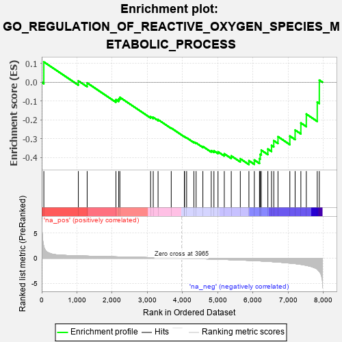
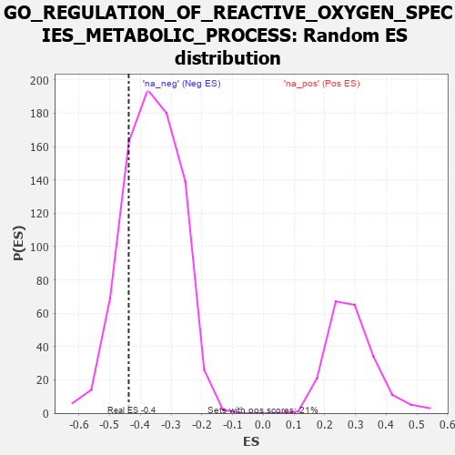

| | | Dataset | 7d |
| Phenotype | NoPhenotypeAvailable |
| Upregulated in class | na_neg |
| GeneSet | GO_REGULATION_OF_REACTIVE_OXYGEN_SPECIES_METABOLIC_PROCESS |
| Enrichment Score (ES) | -0.43792474 |
| Normalized Enrichment Score (NES) | -1.2097049 |
| Nominal p-value | 0.2005044 |
| FDR q-value | 0.6173463 |
| FWER p-Value | 1.0 |
Table: GSEA Results Summary

Fig 1: Enrichment plot: GO_REGULATION_OF_REACTIVE_OXYGEN_SPECIES_METABOLIC_PROCESS
Profile of the Running ES Score & Positions of GeneSet Members on the Rank Ordered List
| PROBE | GENE SYMBOL | GENE_TITLE | RANK IN GENE LIST | RANK METRIC SCORE | RUNNING ES | CORE ENRICHMENT | | 1 | RAC2 | | | 60 | 2.442 | 0.1082 | No |
| 2 | AKT1 | | | 1040 | 0.476 | 0.0074 | No |
| 3 | PARL | | | 1290 | 0.432 | -0.0035 | No |
| 4 | BMP7 | | | 2107 | 0.290 | -0.0926 | No |
| 5 | SYK | | | 2186 | 0.278 | -0.0893 | No |
| 6 | TRAP1 | | | 2219 | 0.274 | -0.0803 | No |
| 7 | TIGAR | | | 3091 | 0.138 | -0.1836 | No |
| 8 | GCH1 | | | 3166 | 0.127 | -0.1868 | No |
| 9 | SMAD3 | | | 3303 | 0.105 | -0.1990 | No |
| 10 | ABCD1 | | | 3677 | 0.047 | -0.2438 | No |
| 11 | ATG5 | | | 4051 | -0.016 | -0.2901 | No |
| 12 | DDAH1 | | | 4056 | -0.016 | -0.2898 | No |
| 13 | MTOR | | | 4114 | -0.025 | -0.2958 | No |
| 14 | ROMO1 | | | 4320 | -0.063 | -0.3187 | No |
| 15 | ARF4 | | | 4383 | -0.073 | -0.3230 | No |
| 16 | MPV17 | | | 4575 | -0.112 | -0.3417 | No |
| 17 | P2RX4 | | | 4813 | -0.161 | -0.3640 | No |
| 18 | CLU | | | 4889 | -0.174 | -0.3652 | No |
| 19 | KLF4 | | | 5005 | -0.198 | -0.3702 | No |
| 20 | HDAC6 | | | 5183 | -0.244 | -0.3810 | No |
| 21 | GRIN1 | | | 5381 | -0.291 | -0.3920 | No |
| 22 | G6PD | | | 5638 | -0.358 | -0.4073 | No |
| 23 | SZT2 | | | 5882 | -0.429 | -0.4176 | Yes |
| 24 | RAC1 | | | 6036 | -0.484 | -0.4139 | Yes |
| 25 | KLF2 | | | 6182 | -0.532 | -0.4070 | Yes |
| 26 | INSR | | | 6204 | -0.538 | -0.3841 | Yes |
| 27 | RGN | | | 6233 | -0.547 | -0.3617 | Yes |
| 28 | COQ7 | | | 6420 | -0.628 | -0.3553 | Yes |
| 29 | PLIN5 | | | 6524 | -0.672 | -0.3364 | Yes |
| 30 | RNF41 | | | 6588 | -0.703 | -0.3110 | Yes |
| 31 | EGFR | | | 6708 | -0.765 | -0.2898 | Yes |
| 32 | CTNS | | | 7044 | -0.965 | -0.2862 | Yes |
| 33 | TSPO | | | 7194 | -1.065 | -0.2545 | Yes |
| 34 | WDR35 | | | 7357 | -1.225 | -0.2169 | Yes |
| 35 | VDAC1 | | | 7512 | -1.409 | -0.1695 | Yes |
| 36 | PKD2 | | | 7822 | -2.167 | -0.1057 | Yes |
| 37 | FYN | | | 7881 | -2.622 | 0.0113 | Yes |
Table: GSEA details [plain text format]

Fig 2: GO_REGULATION_OF_REACTIVE_OXYGEN_SPECIES_METABOLIC_PROCESS: Random ES distribution
Gene set null distribution of ES for GO_REGULATION_OF_REACTIVE_OXYGEN_SPECIES_METABOLIC_PROCESS